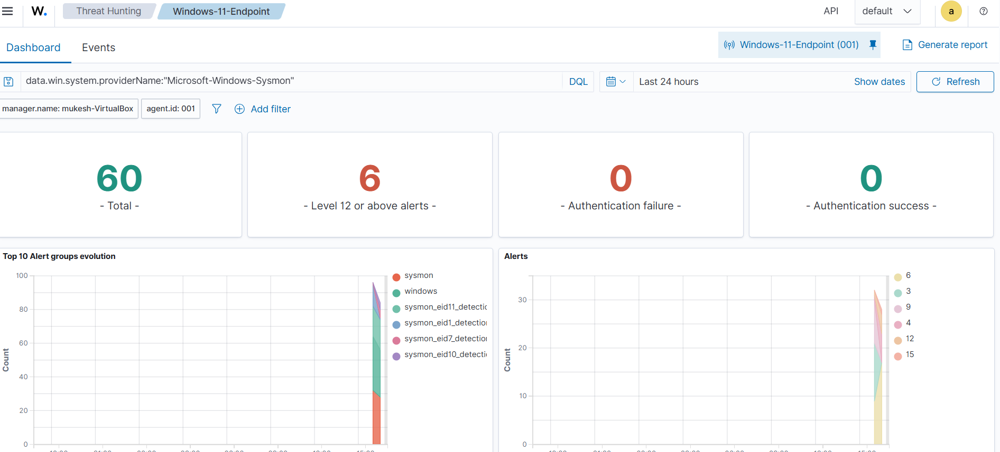
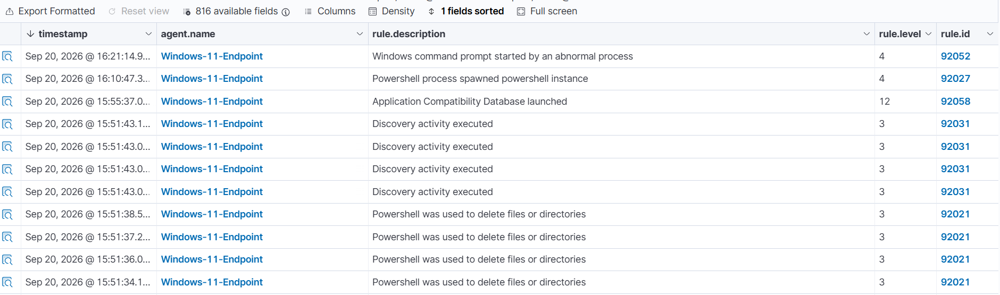
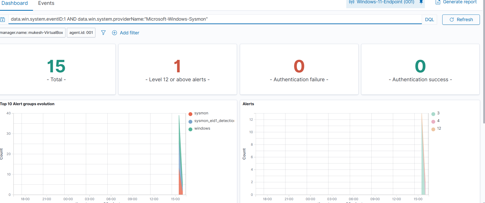

SentinelX Enterprise SOC & SIEM Platform
End-to-end hands-on Security Operations Center combining Wazuh (EDR/SIEM), Zeek (Network Monitor), MISP (Threat Intelligence), Sysmon, and Python security automation with RFC 6238 2FA.
✅ Validated Positive IOC Pipeline
Tested and verified in an isolated laboratory: Windows endpoint generated HTTP request with controlled IOC in Host header, Zeek detected traffic, and SentinelX automatically matched MISP Event ID 1.
Target IP: 192.0.2.123 in HTTP Host
Captured transaction and extracted HTTP Host field
Automated regex extraction and PyMISP search query
Category: Network activity · Event ID: 1 · Type: ip-dst
🏗️ The Making Process (In Short For Recruiters)
How SentinelX was engineered from network virtualization to fullstack production deployment.
Lab Virtualization & Network Segregation
Configured VirtualBox host-only LAN hosting Windows 11 endpoint with Sysmon, Ubuntu SOC server with Wazuh and Zeek, and Kali Linux attacker node for safe adversary emulation.
Telemetry Normalization (ECS)
Engineered Python ingestion pipeline normalizing heterogeneous logs (Zeek TSV, Wazuh JSON, Sysmon EID 1 & 10) into Elastic Common Schema with sub-millisecond regex indicator extraction.
Threat Intel & MITRE Correlation
Integrated MISP REST API for sub-second IOC lookups. Successfully tested positive controlled IOC match (192.0.2.123) and correlated Sigma rules with MITRE ATT&CK matrix.
Zero-Trust 2FA & Production Stack
Built fullstack web application with PBKDF2 hashing, RFC 6238 TOTP 2FA, QR enrollment, SOAR containment playbooks, Astro portal, and Docker container orchestration.
📸 Verified Detection Screenshots
Actual telemetry and alert verification from Windows 11 and Wazuh Manager.

Sysmon Event ID 1 Telemetry Overview
Wazuh Dashboard showing ingested process creation telemetry from Windows 11 endpoint.

Wazuh Alert Rule 92027 Triggered
Powershell process spawned powershell instance detection mapped to MITRE T1059.001.

Threat Hunting & Query Explorer
Filtering endpoint process creation events by image path and command line arguments.
Hire Mukesh Jena (MCA)
Ready to join as a SOC Analyst, Incident Responder, or Detection Engineer. Experienced in Python security automation, Wazuh, Zeek, MISP, and Windows/Linux threat investigation.